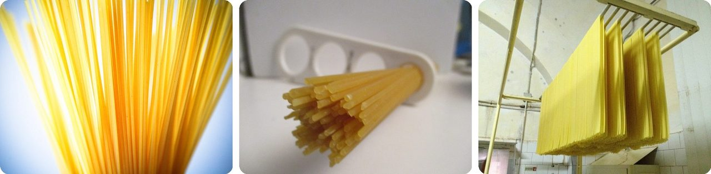
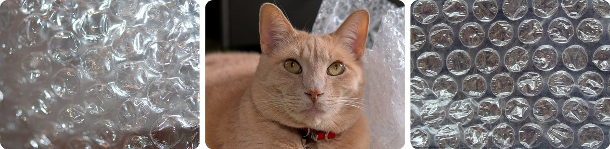
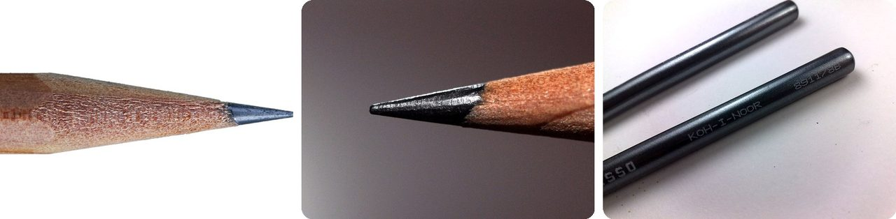
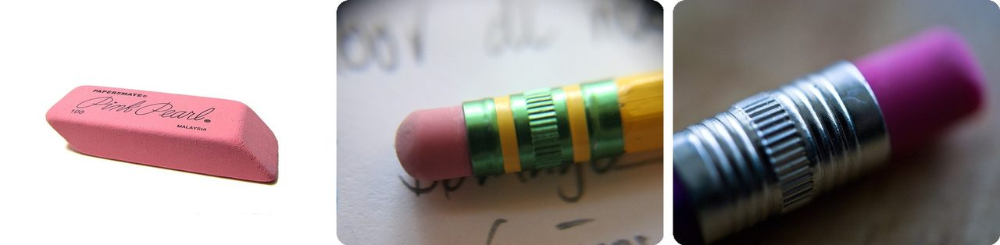
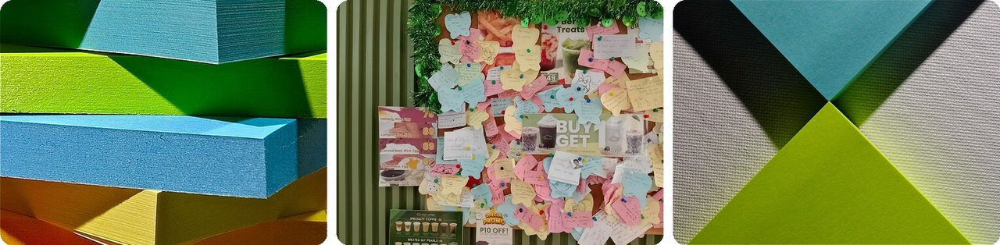
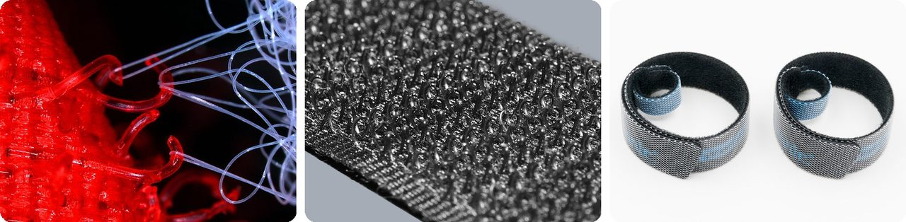
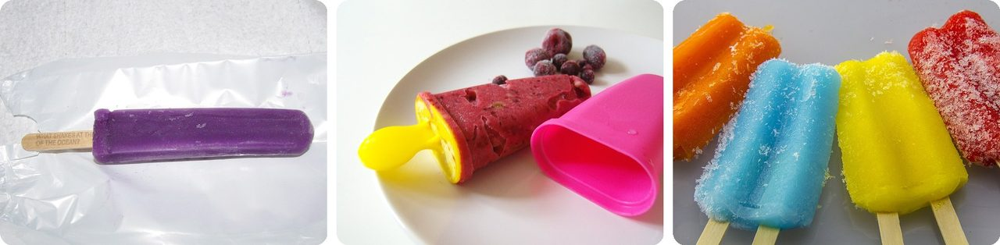
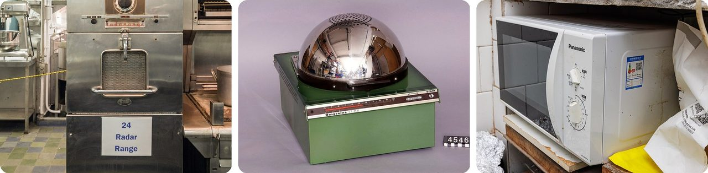
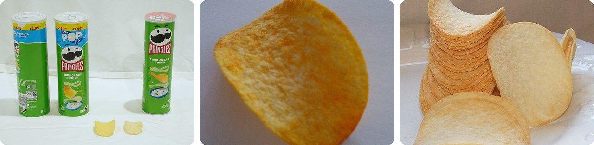
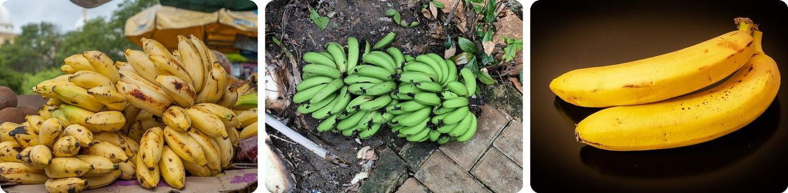

🌍 Top 10 Surprising Facts About Everyday Things
Oct 5, 2026
1. 🍝 Dry spaghetti almost never snaps into just two pieces

Try it: hold a stick of dry spaghetti by both ends and bend it. It almost always breaks into three pieces or more, never a neat two. The famous physicist Richard Feynman once puzzled over exactly this.
Here's why. The stick first breaks near the middle, where it's bent the most. Each half then snaps back, and that sudden jolt sends a wave of vibration racing along it, which bends it further and cracks it again. Two French physicists explained this in 2005 and won an Ig Nobel Prize for it.
In 2018, MIT researchers finally found the trick. Twist a 10-inch stick about 270 degrees (three-quarters of a full turn) first, then bend it, and it breaks in two. They filmed the breaks at up to a million frames per second to watch it happen.
Basically, the first break is the whip crack that sets off the rest.
2. 🫧 Bubble wrap was supposed to be wallpaper

In 1957, two inventors, Alfred Fielding and Marc Chavannes, tried to make a textured plastic wallpaper by sealing air bubbles between two plastic sheets. Nobody wanted it on their walls.
But they noticed the bubbly sheet made a great cushion for fragile things. Fielding co-founded a company called Sealed Air in 1960 to sell it for packing.
The bubbles range from 6 mm to over 26 mm wide, from pea-sized to bigger than a grape. The most common size is 1 cm.
So that satisfying pop is the sound of a failed home makeover.
3. 🏴 Pencil "lead" has never been lead

In about 1565, people in Borrowdale, in England's Lake District, found a huge deposit of a soft, black, very pure rock. It was so solid it could be sawn into sticks for writing. Chemistry was still young, so people assumed it was a kind of lead and called it "black lead." It was actually graphite, a form of carbon.
The name stuck even though the stuff inside your pencil is graphite powder mixed with clay. England had the only good supply, so it kept a monopoly on pencils until Germans worked out how to make pencil cores from graphite powder in 1662.
Pencils stayed so precious that during World War II, Britain banned crank pencil sharpeners because they wasted too much "lead" and wood.
In other words, a 450-year-old mix-up is still printed on every pencil.
4. 🍞 People used to erase pencil marks with bread

Before erasers existed, people rubbed out pencil marks with balls of wax or with crustless bread. One student in Tokyo in the late 1800s remembered being handed bread erasers by the pile, and admitted to eating some.
Then, in 1770, an English instrument maker named Edward Nairne reached for some breadcrumbs, grabbed a lump of rubber by mistake, and found it worked better. He sold rubber erasers for three shillings for a cube about half an inch on each side, roughly the size of a sugar cube. That was a lot of money back then.
The material itself got the name "rubber" from this rubbing-out job, and in Britain an eraser is still called a rubber. The first patent for an eraser stuck on the end of a pencil came in 1858.
Think of it as going from a sandwich to a stationery aisle.
5. 📝 Post-it Notes came from a glue that failed

In 1968, Spencer Silver, a scientist at 3M in the US, was trying to make a super-strong glue. He made the opposite: a weak glue that stuck lightly, peeled off cleanly, and could be stuck again.
For five years, nobody at 3M knew what to do with it. Then, in 1974, his colleague Arthur Fry was annoyed that his bookmarks kept falling out of his church hymn book. He realized Silver's glue could hold them in place without tearing the pages.
The first test launch in 1977 flopped. After 3M handed out free samples to offices in Boise, Idaho, more than 90% of people said they'd buy them, and Post-its launched across the US in 1980.
So the world's most famous sticky note started out as a failed glue.
6. 🇨🇭 Velcro was copied from burrs stuck to a dog

In 1941, Swiss engineer George de Mestral came home from a hunting trip in the Alps with his dog, both covered in burdock burrs (prickly seed heads). He looked at the burrs under a microscope and saw hundreds of tiny hooks catching on loops in fabric and fur.
He shrank the old idea of hooks and eyes down to a carpet of tiny hooks on one strip and tiny loops on the other. Weavers in Lyon, France, a weaving center back then, rejected the idea. His first cotton version wore out fast, so he switched to nylon.
The name blends two French words: velours (velvet) and crochet (hook).
Think of it as a burr you can buy by the meter.
7. 🇺🇸 An 11-year-old invented the Popsicle by accident

In 1905, in Oakland, California, 11-year-old Frank Epperson mixed a soda flavoring powder with water and left it on the porch overnight, stirring stick still in the cup.
The temperature dropped below freezing. By morning, the drink had frozen solid around the stick.
He didn't sell them right away. He started selling them at an amusement park in 1923, eighteen years later, and patented them in 1924 as the "Epsicle." His own kids supposedly talked him into renaming it the Popsicle.
It's a forgotten drink that turned into a summer classic.
8. 🍫 The microwave oven was discovered by a melted candy bar

In 1945, engineer Percy Spencer was working on radar equipment at a company called Raytheon when he noticed the candy bar in his pocket had melted. The invisible microwaves from the radar were heating it.
He tested it on purpose next. The first food he cooked was popcorn. The second was an egg, which exploded in one of his coworkers' faces.
Raytheon built the first microwave oven, called the "Radarange," and started selling it in 1947. It was meant for restaurants and planes, and in 1946 the expected price was $1,250.
Basically, your kitchen microwave is a radar set that cooks.
9. 🥫 The man who designed the Pringles can is buried in one

In the 1950s, Procter & Gamble asked chemist Fredric Baur to fix common complaints about chips: broken, greasy, stale, and bags full of air. He came up with saddle-shaped chips that stack neatly, and he designed and patented the tall tube to hold them.
Later he asked to be buried in one. When he died in 2008 at age 89, his children put part of his ashes in an Original-flavor Pringles can and buried it in his grave in Ohio.
The chip's curve has a math name: a hyperbolic paraboloid, the same shape as a horse saddle.
He's resting inside his favorite invention.
10. 🍌 Bananas are slightly radioactive

Bananas are full of potassium, and a tiny bit of all natural potassium is potassium-40, which is radioactive. So every banana gives off a little radiation.
How little? Eating one banana gives you about 1% of the natural radiation you already get every day. A chest CT scan equals about 70,000 bananas. And it doesn't build up: your body flushes out extra potassium in your pee.
Scientists even use the "banana equivalent dose" as a fun way to explain tiny amounts of radiation.
It's like measuring a raindrop against a swimming pool.
Fun fact
The machine that cooked Pringles was developed with help from Gene Wolfe, a mechanical engineer. Wolfe is better known for something else entirely: he wrote science fiction and fantasy novels. So the same person helped build a snack-chip machine and wrote books about faraway worlds. Lots of great writers had surprising day jobs: next time, famous authors and their unexpected careers.
Photo credits (Wikimedia Commons)
- #1: Close up of dry spaghetti (rawpixel) by Markus Spiske, CC0
- #1: Spaghetti measure macro.jpg by Bodhi Peace, CC BY-SA 4.0
- #1: Drying Spaghetti in Gragnano.jpg by Italy's Best Foods : Pasta Faella, CC BY-SA 2.0
- #2: Bubble-wrap closeup.JPG by Juliancolton, Public domain
- #2: Larry the cat laying with bubble wrap (DSCF6686).jpg by Trougnouf (Benoit Brummer), CC BY 4.0
- #2: Bubble Wrap.jpg by User Consequencefree on en.wikipedia, CC BY-SA 3.0
- #3: Pencil Tip Macro.jpg by TJ Cosgrove, CC BY-SA 4.0
- #3: Closeup of pencil graphite.JPG by Juliancolton, Public domain
- #3: Koh-i-noor Woodless Graphite Pencils (flickr) by mechnine, CC BY 2.0
- #4: Pink Pearl eraser.jpg by ZooFari, Public domain
- #4: Pencil eraser.jpg by Alex Morfin, CC BY-SA 3.0
- #4: Eraser (2809542009).jpg by Liji Jinaraj from San Francisco, USA, CC BY-SA 2.0
- #5: Post-it notes (15304546246).jpg by Dean Hochman, CC BY 2.0
- #5: Dash Coffee at Gate 1 Dasma - Interior - Post-it notes wall 1.jpg by UndueMarmot, CC0
- #5: post-it notes (flickr) by Dean Hochman, CC BY 2.0
- #6: Velcro photomicrograph.jpg by Trazyanderson, CC BY-SA 4.0
- #6: Velcro Hooks.jpg by Alexander Klink, CC BY 3.0
- #6: 2023 Opaski rzepowe.jpg by Jacek Halicki, CC BY-SA 4.0
- #7: Grape Popsicle (27017361690).jpg by Willis Lam, CC BY-SA 2.0
- #7: Fruit ice lollies (8588758339).jpg by Lablascovegmenu from London, CC BY 2.0
- #7: Double pops.jpg by Photograph by Sally Robertson, CC BY 2.0
- #8: NS Savannah microwave oven MD8.jpg by Acroterion, CC BY-SA 4.0
- #8: Husqvarna Cupol microwave oven.jpg by Peter Häll, CC BY-SA 4.0
- #8: Panasonic MICROWAVE OVEN NN-GM333W.jpg by Dinkun Chen, CC BY-SA 4.0
- #9: Pringles-165g-to-134g.jpg by DiamondIIIXX, CC0
- #9: Pringles Chip.jpg by Quant, CC BY-SA 3.0
- #9: Pringles chips.JPG by Glane23, CC BY-SA 3.0
- #10: Bunch of bananas on sale.jpg by Wilfredor, CC0
- #10: Green raw bananas.jpg by Vitaium, CC BY-SA 4.0
- #10: Bananas on black background 02.jpg by Krzysztof Golik, CC BY-SA 4.0


.jpg){kind=link}


.jpg){kind=link}
.jpg){kind=link}


.jpg){kind=link}
.jpg){kind=link}